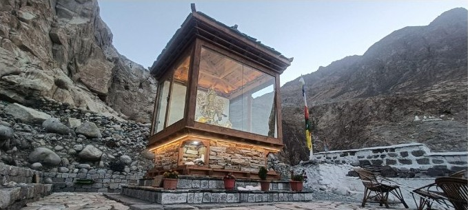
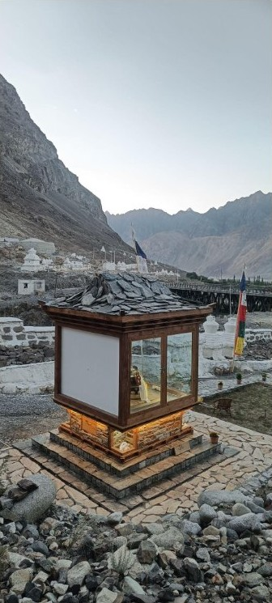
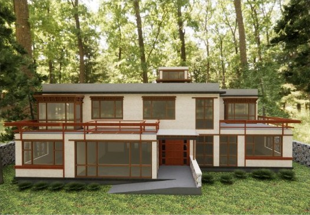
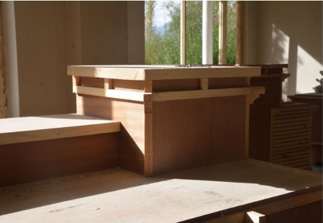

Building gently.
Living deeply.

Green Tara Gompa
Hunder, Ladakh
Studio Undertrees is an experimental architecture practice led by Pahul Tyagi, exploring how material, climate, and craft can make a space feel.
Explore selected work01 / Selected work
Places made
from their place.
Projects shaped by local materials, passive solar thinking, and a close relationship with the people who build and inhabit them.

Material studies in the Nubra Valley
02 / The practice
Architecture begins
with attention.
We listen to the land, learn from local craft, and work with what is already there.
Material honesty
Stone, earth, timber, and lime are allowed to age, breathe, and tell their own story.
Climate as form
Sun, wind, shade, and thermal mass are treated as primary design materials.
Built together
Clients, craftspeople, and local knowledge remain part of the process from sketch to site.
03 / At every scale
From landscape
to joinery.


04 / Contact
Have a place
in mind?
Studio Undertrees welcomes thoughtful projects, collaborations, and conversations about building with the landscape.
Call the studio +91 79826 25108